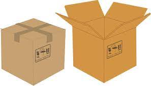
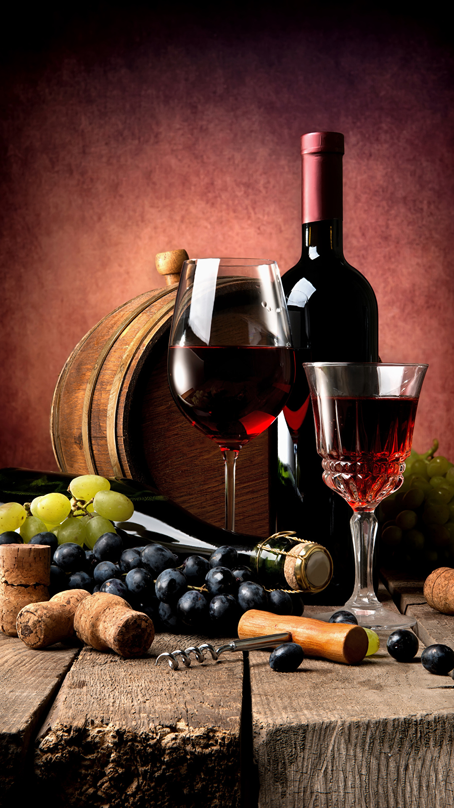

<div class="container my-5">
    <div class="row">
        <div class="col-12 col-md-8">
            <h3>Cava Esplendor</h3>
            <p> Descubre el resplandor del arte vinícola en cada burbuja. Somos una empresa apasionada dedicada a la creación de cavas de calidad excepcional y refinado encanto. Cuidadosamente elaborados con uvas seleccionadas y siguiendo métodos tradicionales, nuestros cavas son la expresión máxima de elegancia y sofisticación. Cada botella cuenta una historia de perfección y dedicación, donde la magia de la fermentación se convierte en un deleite para los sentidos. En Cava Esplendor, nuestra misión es brindarte experiencias únicas y memorables, envueltas en el resplandor de nuestras burbujas doradas. Sumérgete en un mundo de sabor y lujo, donde el brindis se convierte en un momento de celebración y la pasión por el vino se transforma en pura esencia de deleite. Bienvenido a Cava Esplendor, donde cada sorbo es una celebración de la vida.</p>
            <div class="row">
                <div class="col-12 col-md-4 text-center">
                    <div class="card h-100 shadow p-3">
                        <h3>Bienestar</h3>
                        
                        <p>Utilizando uvas seleccionadas de los mejores viñedos, combinamos tradición con técnicas modernas para crear experiencias enológicas equilibradas y armoniosas. Nuestros viñedos se cultivan de manera sostenible, respetando el entorno natural. Además, nos comprometemos con la comunidad local y colaboramos con proyectos sociales. En resumen, en Bienestar encontrarás vinos excepcionales que invitan a disfrutar, relajarse y brindar por una vida equilibrada y plena.</p>
                    </div>
                </div>
                <div class="col-12 col-md-4">
                    <div class="card h-100-shadow p-3">
                        <h3>Investigación</h3>
                        
                        <p>Nuestro equipo de expertos enólogos y científicos trabaja incansablemente para explorar nuevas fronteras, descubrir innovaciones y desvelar los secretos ocultos detrás de cada cepa. A través de rigurosos estudios y experimentos, desafiamos los límites de la viticultura y la enología, en busca de nuevas formas de mejorar la calidad, el sabor y la sostenibilidad de nuestros vinos. Con cada descubrimiento, estamos comprometidos en enriquecer la experiencia del consumidor y elevar el arte del vino a niveles sin precedentes. En "Vitae Innovación Vinícola", la investigación es la llave que desbloquea un futuro apasionante y lleno de posibilidades en el fascinante mundo del vino.</p>
                    </div>
                    
                    
                </div>
                <div class="col-12 col-md-4">
                    <div class="card h-100 shadow p-3">
                        <h3>Alimentación</h3>
                        
                        <p>Cada botella es una obra maestra elaborada con pasión y dedicación, utilizando uvas de viñedos seleccionados y técnicas tradicionales. Nuestros productos reflejan el legado y la riqueza de la cultura vitivinícola, ofreciendo sabores únicos y experiencias inolvidables. Descubre la elegancia y el encanto en cada copa, mientras te sumerges en un viaje sensorial lleno de aromas, sabores y emociones.</p>
                    </div>
                </div>
            </div>
        </div>
        <div class="col-12 col-md-4 align-self-center">
            
        </div>
    </div>
</div>